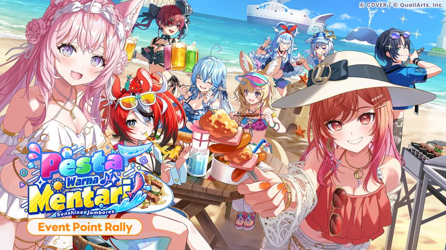
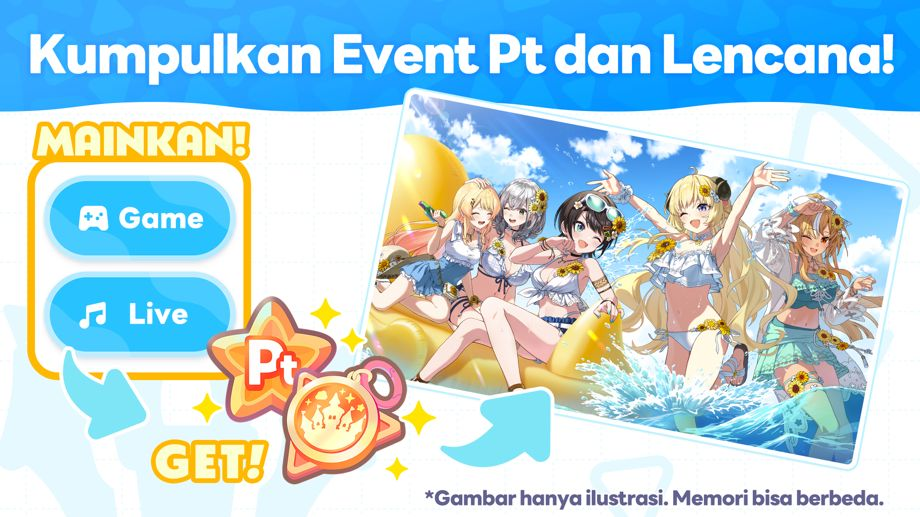
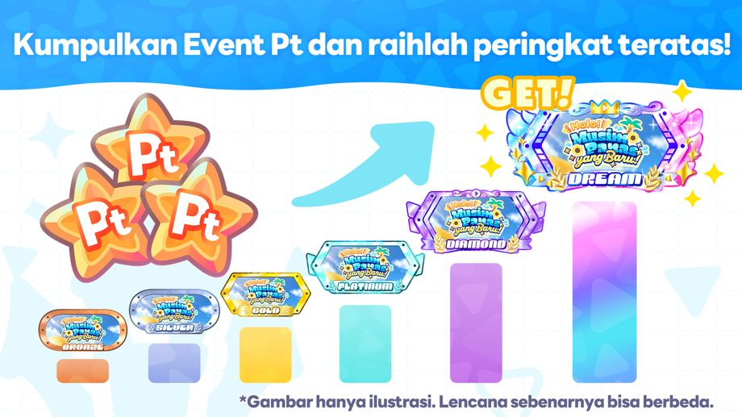
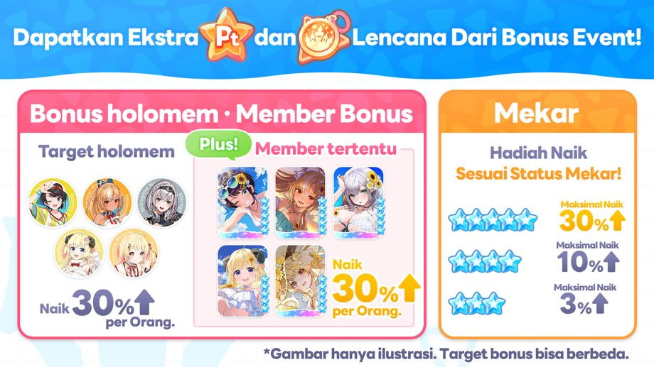

Event Kumpul Poin "Pesta Warna Mentari" sedang berlangsung!
◆Persyaratan Partisipasi
Menyelesaikan Cerita Utama Chapter 1 Episode 4 "Legenda Yang Terhubung".
◆Periode Event
2026-10-15 12:00:00,2026-10-17 19:59:59
◆Periode Hasil Pengumuman
2026-10-18 12:00:00,2026-10-23 19:59:59
◆Batas Penukaran Lencana Event
2026-10-23 19:59:59
Ringkasan Event

Pada Event Point Rally ini, pemain bisa mendapatkan Event Lencana dan Event Pt melalui Live dan Minigame.
Dengan mengumpulkan Lencana Event, pemain bisa menukarkan Lencana dengan item seperti Event Memory di Toko Penukaran.
◆Memori Event

Ranking Event Pt

Ranking Event Pt akan dihitung berdasarkan jumlah Event Pt yang diperoleh selama periode event.
Dengan berada di dalam peringkat, pemain akan mendapatkan hadiah seperti Lencana eksklusif dari event.
*Untuk detail lebih lanjut, silakan periksa di [Event]→[Peringkat]→[Ranking Event Pt].
Bonus yang Diperoleh dari Event

Bonus Event meliputi peningkatan jumlah Event Pt dan Lencana Event yang diperoleh di Live.
Ada tiga jenis bonus yang bisa diperoleh ketika memainkan Live yaitu "Bonus Member", "Bonus Holomem", dan "Bonus Mekar".
・Bonus Member: Memainkan Live dengan member yang diminta di dalam tim akan memberikan bonus tambahan.
・Bonus holomem: Memainkan Live dengan holomem yang diminta di dalam tim akan memberikan bonus tambahan.
・Bonus Mekar: Jumlah hadiah yang diperoleh dari Live akan meningkat sesuai dengan status Mekar yang ada di dalam tim.
Selain itu, Bonus Event juga termasuk bonus yang meningkatkan Event Pt dan Lencana Event yang diperoleh dari Minigame.
Ada dua jenis bonus yang bisa diperoleh dari Minigame, yaitu "Bonus Minigame" dan "Bonus Member".
・Bonus Minigame: Bonus tambahan bisa diperoleh dengan memainkan Minigame yang ditentukan.
・Bonus Member: Hanya dengan memiliki Member yang ditentukan, bonus tambahan akan diperoleh.
◆holomem yang Memperoleh Bonus
・Houshou Marine
・Hakui Koyori
・Kobo Kanaeru
・Hakos Baelz
・Yukihana Lamy
・Omaru Polka
・Ichijou Ririka
◆Member yang Memperoleh Bonus
・★5 Kuasai Meriam Air!♡ Houshou Marine
・★5 Lirikan Misteri Hakui Koyori
・★5 Raga Selaras Ombak Kobo Kanaeru
・★5 Ini Jagoan Utamaku! Hakos Baelz
・★5 Penangkal Gerah Yukihana Lamy
・★5 Pesta BBQ Bersama Omaru Polka
・★5 Senyum Bintang Malam Ichijou Ririka
◆Mini Game yang Memperoleh Bonus
・Splash Ball
*Untuk informasi lebih lanjut, silakan periksa [Event]→[Bonus Event].
Bonus Skor Event

Bonus Event meliputi bonus skor yang akan menambah skor pemain selama periode tertentu ketika pemain memakai tim dengan member yang bisa mendapatkan bonus dan memainkan lagu yang ada pada event tersebut.
Member yang bisa mendapatkan bonus skor bervariasi tergantung lagu event.
Lagu Tantangan Event
・PARADISE!
*Untuk informasi lebih lanjut, silakan periksa [Event]→[Bonus Event].
*Lagu Tantangan "PARADISE!" Setelah menyelesaikan Cerita Utama Chapter 3 Episode 15 "Panggung Laut!", fitur ini akan terbuka.
Peringkat Skor Tertinggi

Peringkat Skor Tertinggi adalah event di mana pemain saling berkompetisi untuk mendapatkan skor tertinggi untuk tiap lagu event dalam waktu yang terbatas.
Dengan berada di dalam peringkat, pemain bisa mendapatkan Lencana eksklusif dari event.
*Pada Lagu Tantangan Event, skor periode terbatas event dan skor biasa keduanya akan tersimpan.
*Untuk informasi lebih lanjut, silakan periksa [Event]→[Peringkat]→[Skor Terbaik]
Catatan Penting
・Event Point dan Lencana Event yang diterima di event ini tidak akan dilanjutkan ke event berikutnya.
・Mohon diperhatikan juga bahwa Lencana Event yang sudah kadaluwarsa tidak bisa digunakan.
・Hadiah Peringkat bisa diterima setelah hasil Peringkat diumumkan dan bisa diperiksa di [Dream Park]→[Menu Ikon]→[Hadiah]
・Walaupun pemain tidak Log In sama sekali selama periode hasil pengumuman ranking, pemain tetap mendapatkan hadiahnya setelah periode event selesai.
・Hadiah penyelesaian Misi yang belum diklaim setelah periode hasil pengumuman selesai bisa diklaim di [Dream Park]→[Menu Ikon]→[Hadiah]
・Memori Event yang bisa ditukar di Toko Penukaran pada event ini bisa muncul di event mendatang.
・Akibat pengaruh kondisi jaringan atau faktor lainnya, dapat terjadi selisih waktu sekitar 1 detik pada waktu mulai dan selesai.
・Konten dan periode event bisa bisa berubah sewaktu-waktu tanpa pemberitahuan terlebih dahulu.
・Untuk informasi lebih lanjut, silakan periksa [Dream Park]→[Event]